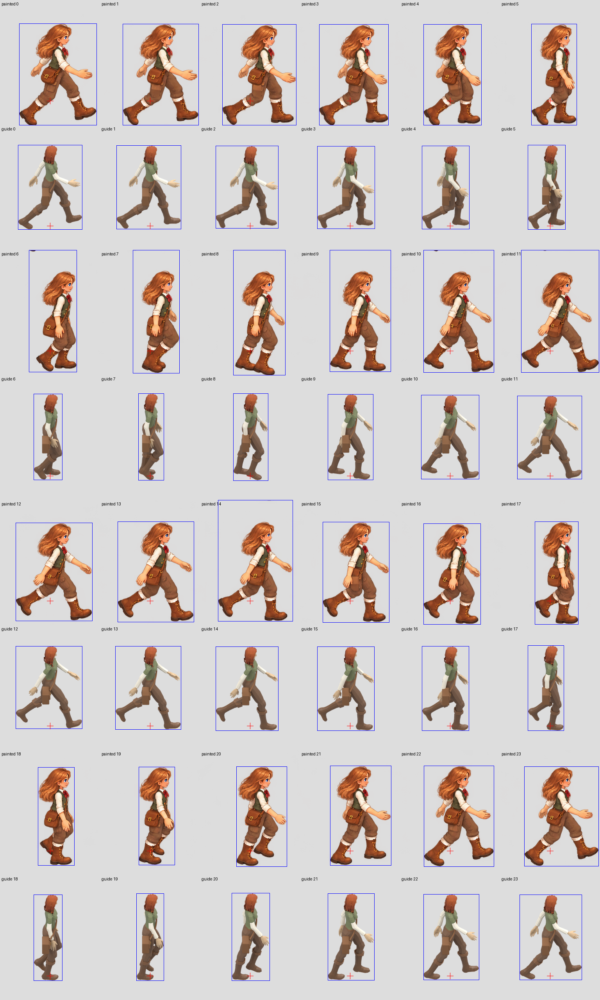

1666.667ms cycle; fixed global canvas transform only. Red cross=native root reference, no anchor correction. Game view uses native body reference scale136/209.6587; painted height drift remains visible.
